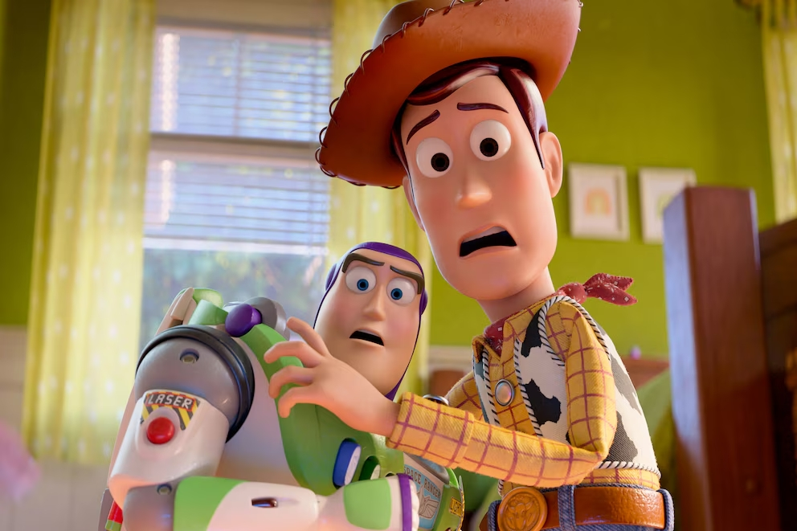

Noticias, curiosidades y novedades del mundo del cine.

La película animada “Toy Story 5” alcanzó una recaudación mundial de 379.241.642 dólares, convirtiéndose en uno de los estrenos animados más exitosos del año y reafirmando el impacto de la franquicia de Pixar y Disney.
Según Box Office Mojo, la cinta logró 227.241.642 dólares en Estados Unidos y 152.000.000 dólares en mercados internacionales, destacando por la gran respuesta del público familiar en países de América, Europa y Asia.
La quinta entrega de Toy Story continúa el legado de una saga iniciada en 1995 y fortalece la presencia de Disney y Pixar en la industria del cine, demostrando que la franquicia sigue siendo una de las más importantes de la animación mundial.
Fuente: infobae
Leer Más